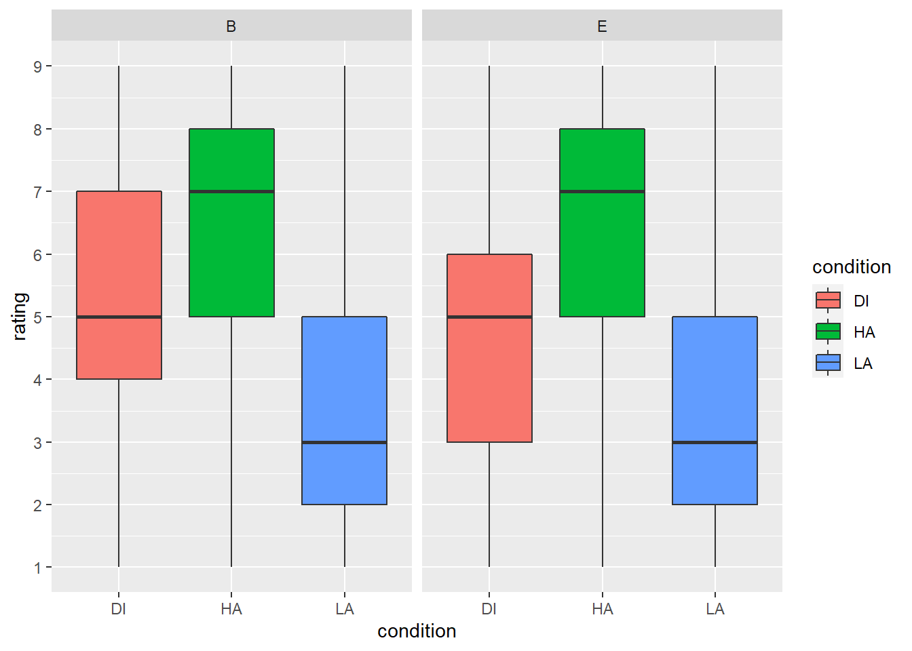

Chapter 10 Recap: Putting it all together
10.1 Bringing your skills together
In this practice exam, you will use all the skills you have learnt to tidy up, summarise, and visualise actual data. This data set is from an experiment where participants were asked to rate 240 words on a scale from 1-9, 1 being not exciting at all and 9 being extremely exciting. This dimension is called emotional arousal of language. The words are split into three conditions: HA = High arousal, LA = Low arousal and DI = neutral distractor words. Each of the words has their own item number ranging from 1-240.
There are three datafiles:
ratings.csvcontains ratings from 47 participants.item_info.csvcontains more information about the words:AROUSALcolumn shows how people from a larger database (different to our participants) have rated the words on arousal, andVALENCEcolumn shows how people have rated these words on valence (i.e. how positive or negative they think the words are).groupscontains information about our participants, who were either bilingual speakersBor monolingual native English speakersE.
Before we get started, make sure you have downloaded and unzipped the folder, and you have the three datafiles and this .Rmd file in it. Now set your working directory to the folder and we are ready to go.
Again, DON’T CHANGE THE OBJECT NAMES. Replace the NULLs with your code.
This exercise is NOT GRADED, but it is very similar to the summative assignment you will be given after this class, and should help you prepare for it.
Question 2
Read the data files into your Global Environment. Store item_info.csv as words, ratings.csv as ratings, and groups.csv as groups. Type your code in the code chunk below.
Question 3
Look at ratings. Oh dear - whoever has entered ratings data clearly doesn’t know about tidy data! Right now, each participant has their own row and each of the 240 words has their own column. We want to transform this data into long format so that the item numbers of the words (1-240) are in one column and all the ratings are in one column. Using gather(), make a new dataframe that has a column called item. This column should include the column headers (item number). Make another column that is called rating, which should include the cell values from columns that contain word ratings.
- Hint 1: Remember how to index columns which have numerical names?
- Hint 2: Go to lecture 5 inclass material to see how to specify the arguments in
gather()
You should end up with a dataframe that has 11280 observations and just three columns. The first 6 rows of ratings_long should look like the ones shown in the tibble below.
| participant | item | rating |
|---|---|---|
| 1 | 1 | 8 |
| 1 | 2 | 5 |
| 1 | 3 | 6 |
| 1 | 4 | 5 |
| 1 | 5 | 2 |
| 1 | 6 | 7 |
Question 4
Now look at words dataframe. We don’t need all these columns. Make a new dataframe called words_small that only includes columns item, Word,AROUSAL and VALENCE.
The first 6 rows of words_small should look like the ones shown in the tibble below.
| item | Word | AROUSAL | VALENCE |
|---|---|---|---|
| 1_HA | porn | 7.24 | 4.32 |
| 2_LA | ford | 2.85 | 5.79 |
| 3_DI | bolt | 4.55 | 3.90 |
| 4_HA | leopard | 6.26 | 6.43 |
| 5_LA | dryer | 2.43 | 5.21 |
| 6_DI | fireman | 4.52 | 6.47 |
Question 5
Now we should put the tables together. But there is a problem! The columns don’t match. We need to change the words_small dataframe slightly. Separate the item column into two columns called item and condition, and remove the underscore.
Hint: Look at lecture 5 for help with this.
The first 6 rows of words_small should look like the ones shown in the tibble below.
| item | condition | Word | AROUSAL | VALENCE |
|---|---|---|---|---|
| 1 | HA | porn | 7.24 | 4.32 |
| 2 | LA | ford | 2.85 | 5.79 |
| 3 | DI | bolt | 4.55 | 3.90 |
| 4 | HA | leopard | 6.26 | 6.43 |
| 5 | LA | dryer | 2.43 | 5.21 |
| 6 | DI | fireman | 4.52 | 6.47 |
Question 6
Join ratings_long with words_small and store this in combined_data. Here, we want to use a mutating join that will join the tables based on the column they have in common.
Question 7
We are almost ready to look at summary statistics, but we need to do two more things first. The participants have entered 0 as a rating when they didn’t know the word, or didn’t have time to read it. We only want to look at the trials where the participant knows what the word is. Remove the rows where the rating is 0 from combined_data. Store this in a dataframe called combined_recog.
Question 8
Final step before summary statistics! Join combined_recog with groups and save it to preprocessed_data. You will get an error message trying to do this. Solve the error so you get the dataframe we are asking for.
HINT: There are multiple ways of solving the error. You can change your dataframe heading in an additional step, or you can use the help function to figure out what to do when the dataframes you are trying to join don’t match.
Question 9
Now we can calculate summary statistics from preprocessed_data. Make a new dataframe rating_summary in which you calculate mean rating and standard deviation of ratings (rating column) for each of the conditions and both participant groups. Call the columns in your summary table mean and sd.
- Hint 1: You need to do this in two steps. Combine the steps together with a pipeline operator: %>%
- Hint 2: You first want to make R think of the data in subgroups based on
conditionandGroup. Only after that you should calculate the summary statistics. - Hint 3: Which dplyr function lets you calculate summary statistics for data?
Now let’s visualise the data! We will use preprocessed_data for all the visualisations.
Question 10
Make a boxplot of ratings. You want condition as the x-axis and rating as the y-axis. Make the ticks on the y-axis to show numbers from 1-9. Also, facet the plot by Group, and make the different conditions different colours (hint: use fill argument in the ggplot aes() to achieve this). When you are done, your boxplot should look like the one below.

Question 11
Next, we want to see how the different features of the words we have collected from the database map onto each other. In dataframe preprocessed_data, we have a column for arousal ratings taken from the database called AROUSAL. We also have a column called VALENCE which shows how negative or positive the participants think these words are. Create a scatterplot to map VALENCE against AROUSAL.
Extra challenge: make the scatterplot points into different colours based on the word type (condition). When you are done, your scatterplot should look like the one below.

Finished
Well done, this is the end of the in-class exercise! We have three extra questions for those who are up for a challenge and would like to play around with the data a bit more.
Bonus Questions
We want to know which word people think is the most exciting and which one is the most boring. Let’s find out!
Question 12 (Bonus)
We’ll go back to working with the combined_recog dataframe. Calculate a mean rating based on our participants’ ratings (the rating column) for each of the words. Call this column mean_rating. This process involves two steps, but put them together with the pipe operator and store it in by_item_ratings.
Hint: You need to make R think about the data in subsets based on the column Word, and then calculate the mean scores.
You should end up with a dataframe that has 240 rows and 2 columns.
10.2 Solutions
# Solution 1 - using inner_join to match two headers that don't match
preprocessed_data <- inner_join(combined_recog, groups, by = join_by("participant" == "Participant"))
# Solution 2 - renaming the column in `combined_recog`
combined_data <- combined_recog %>% rename("Participant" = participant)
preprocessed_data <- inner_join(combined_data, groups, by = join_by("Participant"))
# Solution 2 as a pipe
preprocessed_data <- combined_recog %>%
rename("Participant" = participant) %>%
inner_join(groups, by = join_by("Participant"))